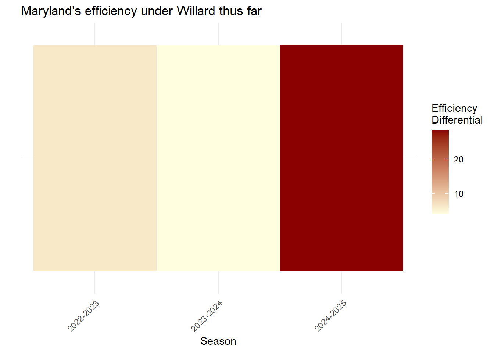
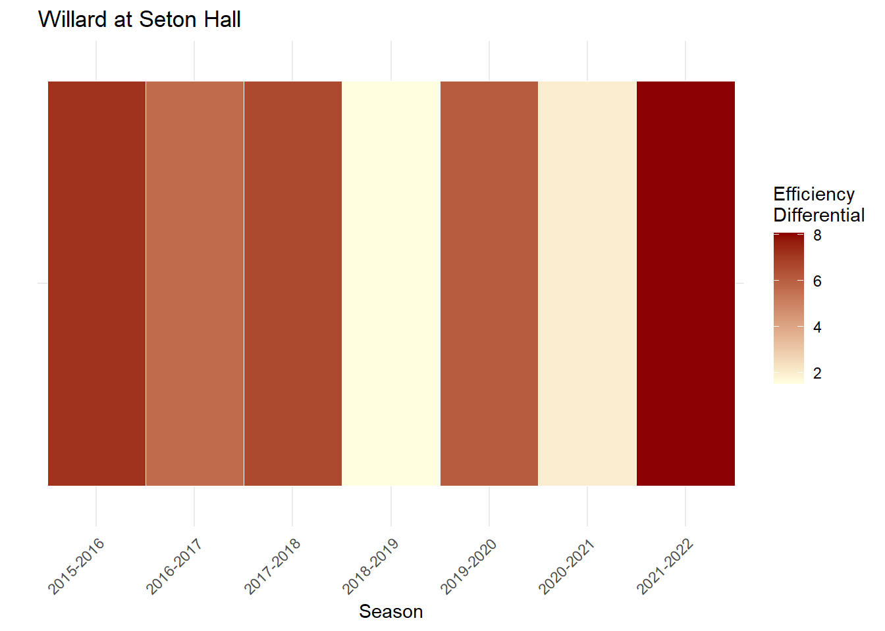
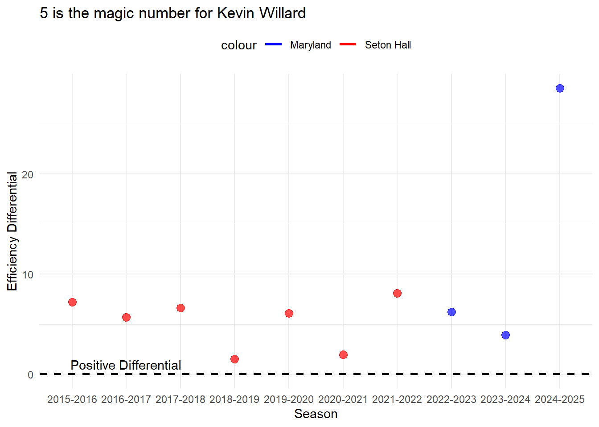

Terps Historic Start Reveals Trends of Good Kevin Willard Teams
lowercaseword
lowercaseword
lowercaseword
Author
Ben Strober
Published
November 12, 2024
Maryland basketball has won all 3 of its first games by 30 or more points for the first time in program history. Is it because of the schedule it has played? In short, the competition has’t been there yet, but when studying Maryland’s metrics compared to Kevin Willard’s teams at Seton Hall, there is very encouraging signs for the remainder of the year.
Willard team’s, especially ones that made the NCAA tournament, have a history of forcing 11 or more turnovers per game. This year, they’re using their defense to absolutely overwhelm opponents. In addition, Maryland’s at an unbelieve able pace in terms of its efficicency differntial.
Out of all the teams for Willard that have made the NCAA tournament, Maryland this season exceeds or matches those metrics.
Let’s explore deeper.
Code
library(tidyverse)
── Attaching core tidyverse packages ──────────────────────── tidyverse 2.0.0 ──
✔ dplyr 1.1.4 ✔ readr 2.1.5
✔ forcats 1.0.0 ✔ stringr 1.5.1
✔ ggplot2 3.5.1 ✔ tibble 3.2.1
✔ lubridate 1.9.3 ✔ tidyr 1.3.1
✔ purrr 1.0.2
── Conflicts ────────────────────────────────────────── tidyverse_conflicts() ──
✖ dplyr::filter() masks stats::filter()
✖ dplyr::lag() masks stats::lag()
ℹ Use the conflicted package (<http://conflicted.r-lib.org/>) to force all conflicts to become errors
Rows: 110084 Columns: 47
── Column specification ────────────────────────────────────────────────────────
Delimiter: ","
chr (7): Season, Opponent, HomeAway, W_L, URL, Conference, Team
dbl (39): Game, TeamScore, OpponentScore, TeamFG, TeamFGA, TeamFGPCT, Team3...
date (1): Date
ℹ Use `spec()` to retrieve the full column specification for this data.
ℹ Specify the column types or set `show_col_types = FALSE` to quiet this message.
Although a heatmap doesn’t tell the story, let’s see how efficient Kevin Willard has been at Maryland compared to Seton Hall.
Code
ggplot(stats_efficiencymd, aes(x = Season, y ="Efficiency Differential", fill = EfficiencyDifferential)) +geom_tile(color ="white") +scale_fill_gradient(low ="lightyellow", high ="darkred", name ="Efficiency\nDifferential") +labs(title ="Maryland's efficiency under Willard thus far",x ="Season",y ="" ) +theme_minimal() +theme(axis.text.y =element_blank(),axis.ticks.y =element_blank(),axis.text.x =element_text(angle =45, hjust =1))

Last year was obviously very poor for Willard. The team was great defensively, but really poor outputs offensively drove down the efficiency a ton, thus leading to Maryland’s first sub .500 season in 30 years.
Code
ggplot(stats_efficiencysh, aes(x = Season, y ="Efficiency Differential", fill = EfficiencyDifferential)) +geom_tile(color ="white") +scale_fill_gradient(low ="lightyellow", high ="darkred", name ="Efficiency\nDifferential") +labs(title ="Willard at Seton Hall",x ="Season",y ="" ) +theme_minimal() +theme(axis.text.y =element_blank(),axis.ticks.y =element_blank(),axis.text.x =element_text(angle =45, hjust =1))

This isn’t enough to tell the story still. It’s interesting to see how these Willard teams actually did really well by these metrics. However, we need to look at the numbers and what exactly was the key. Additionally, 2021-2022, Seton Hall missed the tournament despite having very efficient numbers. 2018-2019 is also a missed tournament year and the efficiency was good. For the most part, Willard’s teams that have higher efficiency differentials usually make the tournament.
It’s evident through looking a this. Willard’s teams have always forced at least 11 TO PG. Let’s visualize how it looks at Seton Hall and at Maryland.
Code
ggplot() +geom_line(data = stats_efficiencymd, aes(x = Season, y = OppTO, color ="Maryland"), size =1) +geom_line(data = stats_efficiencysh, aes(x = Season, y = OppTO, color ="Seton Hall"), size =1) +labs(title ="Willard's teams make it tough to care for the ball",x ="Season", y ="Opponent Turnovers (Opp TO)") +scale_color_manual(values =c("Maryland"="blue", "Seton Hall"="red")) +theme_minimal() +theme(legend.position ="top") +geom_point(data = stats_efficiencymd, aes(x = Season, y = OppTO), color ="blue", size =3, alpha =0.7) +geom_point(data = stats_efficiencysh, aes(x = Season, y = OppTO), color ="red", size =3, alpha =0.7)
Warning: Using `size` aesthetic for lines was deprecated in ggplot2 3.4.0.
ℹ Please use `linewidth` instead.
`geom_line()`: Each group consists of only one observation.
ℹ Do you need to adjust the group aesthetic?
`geom_line()`: Each group consists of only one observation.
ℹ Do you need to adjust the group aesthetic?
Willard’s teams have never had a problem forcing turnovers. It’s why his teams have usually been pretty sound defensively. In 2016, 17, 18 and 19, Willard’s teams made the NCAA tournament and those years saw the team at 12 or more OPP To per game.
In his first 2 years at Maryland, he did not reach that mark. However, the start of 2024 has him on track to do so.
What else do we notice?
Code
ggplot() +geom_line(data = stats_efficiencymd, aes(x = Season, y = EfficiencyDifferential, color ="Maryland"), size =1.2) +geom_line(data = stats_efficiencysh, aes(x = Season, y = EfficiencyDifferential, color ="Seton Hall"), size =1.2) +labs(title ="5 is the magic number for Kevin Willard",x ="Season", y ="Efficiency Differential") +scale_color_manual(values =c("Maryland"="blue", "Seton Hall"="red")) +theme_minimal() +theme(legend.position ="top") +geom_point(data = stats_efficiencymd, aes(x = Season, y = EfficiencyDifferential), color ="blue", size =3, alpha =0.7) +geom_point(data = stats_efficiencysh, aes(x = Season, y = EfficiencyDifferential), color ="red", size =3, alpha =0.7) +geom_hline(yintercept =0, linetype ="dashed", color ="black", size =0.8) +annotate("text", x =2, y =1, label ="Positive Differential",)
`geom_line()`: Each group consists of only one observation.
ℹ Do you need to adjust the group aesthetic?
`geom_line()`: Each group consists of only one observation.
ℹ Do you need to adjust the group aesthetic?

In every year that a Willard team has made the NCAA tournament except for 2018-2019, Willard’s team has had an efficiency differential over five. Only twice in this data set has a Willard team missed the tournament after posting a +5 efficiency differential.
It’s only 3 games into the season, but Maryland’s efficiency differential is off the chart at 20+. Even when Maryland comes down to earth eventually as the schedule ramps up, they appear to be off to strong tendencies for Willard teams.
Marquette is a big taste, we’ll revisit Maryland’s efficiency numbers after that game.